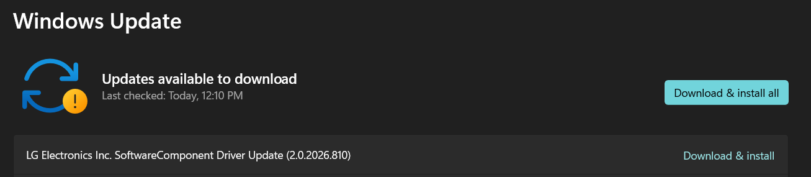
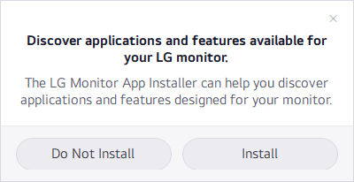

4 minutes
LG updated its adware
LG has been under fire for what its devices do after people buy them. Gamers Nexus found that some LG monitors caused Windows to install an LG app that promoted more software, including McAfee. More recently, its investigation 216,000,000 Spy TVs: The LG Smart TV Problem examined LG’s Automatic Content Recognition and other privacy concerns. Different products, same question: who decides what a device does after it enters your home?
I previously reversed LG’s Monitor App Installer and the driver that installed it. Today, Windows Update offered a new version of that SoftwareComponent. Given the recent criticism, I wanted to know what LG had changed.

Inside the update
I exported version 2.0.2026.810 from the Driver Store. It contains three files:
LGMonitorAppSoftwareComponent.cat 11.2 KB
lgmonitorappsoftwarecomponent.inf 1.2 KB
LGMonitorInstallManager.exe 2.2 MB
Before the update, the old INF used a Store-app link:
[LG_Monitor_Control_Install]
SoftwareType=2
SoftwareID=pfn://LGElectronics.LGMonitorApp_cfnzzhwkr8z5w
SoftwareType=2 tells Windows to install that Store package. This is how the old app arrived without a prompt.
The new INF removes that section and replaces it with this:
[LGMonitor_Install.Software]
AddSoftware=LGMonitorInstallManager,,LG_Monitor_InstallManager_Install
[LG_Monitor_InstallManager_Install]
SoftwareType = 1
SoftwareBinary = %13%\LGMonitorInstallManager.exe
SoftwareArguments = /driverflow,/campaign:1,/delay:60,<<DeviceInstanceID>>
SoftwareVersion = 1.1.0.0
SoftwareType=1 instead tells Windows to run a bundled Win32 executable. %13% is the Driver Store. Device Setup Manager event 165 recorded the exact launch:
"C:\Windows\System32\DriverStore\FileRepository\
lgmonitorappsoftwarecomponent.inf_amd64_46db1b4b0dcddd74\
LGMonitorInstallManager.exe"
/driverflow
/campaign:1
/delay:60
SWD\DRIVERENUM\{3846ad8c-dd27-433d-ab89-453654cd542a}#LGMonitorApp&6&4c65595&0
The old driver automatically installed a Store app. The new driver automatically runs an EXE.
What the new program does
LGMonitorInstallManager.exe is a .NET Framework WinForms application, version 2.0.2026.805. It is obfuscated with Eazfuscator.NET: names are scrambled, strings encrypted, and anti-disassembly and anti-tamper protections enabled. That is an odd amount of protection for a consent dialog whose purpose is supposedly transparency.
I used EazFixer to recover its strings, removed SuppressIldasmAttribute from an analysis copy, and disassembled the IL.
Windows launches /driverflow elevated during device installation. It exits if:
- an older LG SoftwareComponent package with the previous
pfn://auto-install directive is still present; - the user has already given a final answer for the current campaign.
Otherwise it:
- copies itself from the Driver Store to
C:\Program Files\LG Electronics\LGMonitorInstallManager; - creates a machine-wide
Runentry so the question survives future logins; - creates an Add/Remove Programs entry named LG Monitor Software Notice;
- creates
state.iniunderC:\ProgramData\LG Electronics\LGMonitorInstallManager; - starts a second copy in the active user’s session with
/install /campaign:1 /delay:60; - creates a cleanup task that eventually removes the copied EXE, Run entry, uninstall entry, state, and task.
The user-session process waits 60 seconds, checks again, and displays this:

When the prompt appears and what Install does
The prompt is suppressed if the old LG driver is still present, the Store app is already installed, the user has already answered the current campaign, or another copy is running. This is why it initially did not appear on my PC: the old, outranked driver package was still in the Driver Store.
Clicking Install removes the temporary Run entry and starts this hidden child process:
%LOCALAPPDATA%\Microsoft\WindowsApps\winget.exe install \
--id 9PM9N6F47JB8 \
--source msstore \
--accept-package-agreements \
--accept-source-agreements \
--silent
Store product 9PM9N6F47JB8 resolves to:
Package: LGElectronics.LGMonitorApp
PFN: LGElectronics.LGMonitorApp_cfnzzhwkr8z5w
Version: 1.2606.1601.0
Arch: x86
That is the same app the previous driver installed directly. LG has simply inserted a consent dialog before it.
Code and consent
LG seems to misunderstand the consent problem. Its earlier defense emphasized that McAfee was optional. Strictly speaking, that was true: the Monitor App installed itself silently, then asked about the next thing.
The new design moves that question one step earlier:
Old:
driver -> automatically install LG Monitor App -> ask about more software
New:
driver -> automatically execute LG consent app -> ask to install LG Monitor App
This is an improvement: the full Store app is no longer installed before consent. But connecting a monitor still lets LG run an elevated program that copies itself into Program Files, creates persistence, and asks a marketing question. The question is more polite; the code that asks it still ran without asking.
A monitor should not need to run a two-megabyte obfuscated .NET program to ask whether I want another program. LG can simply link to its software and let me choose to get it.